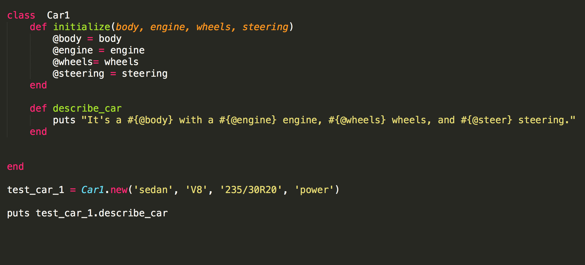
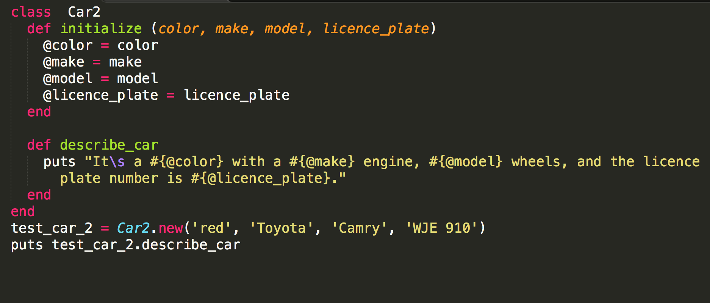

Cora Hays-Magan

In Ruby, a class serves as a manufacturing system for an object. The class works as a Henry Ford model factory, producing the same product time and time again. Just like with the Model-T, the objects a class produces can be altered later.
Here's a car class:
The output will be: It a sedan with a V8 engine, 235/30R20 wheels, and power steering.
This is a car, but if I handed you keys and said to find it in a full lot and drive it for the day, the object would be of little help. The body will give me a shape to look for, but having wheels and an engine do not help in this case.
So lets make another car class:
The output will be: It's a red with a Toyota engine, Camry wheels, and the licence plate number is WJE 910.
With this car class, I can easily find my car in a full lot, so it must be the better class...
...No, each of these classes for car serve a different purpose. Car1 is more technical and less visual in it's description. It will help if the application is for a mechanic but not for an app like Lyft or Uber. Well, maybe not Uber as it fails to tell you the color of the car (my pet peeve).